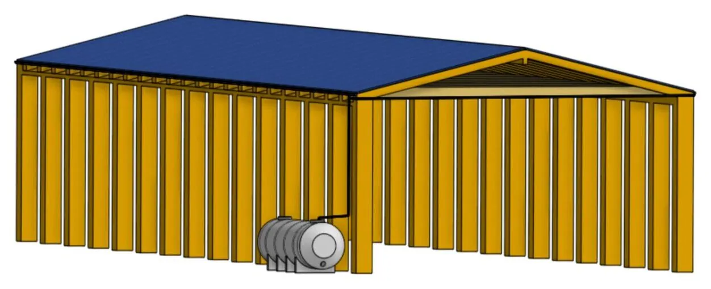
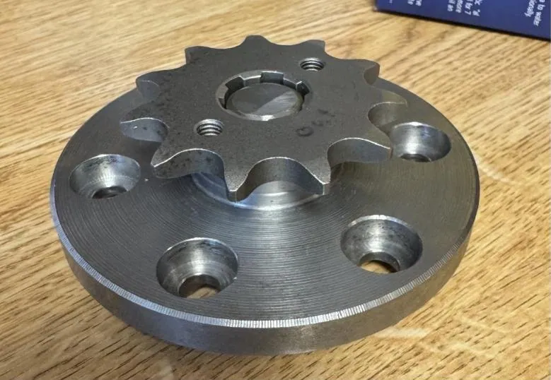
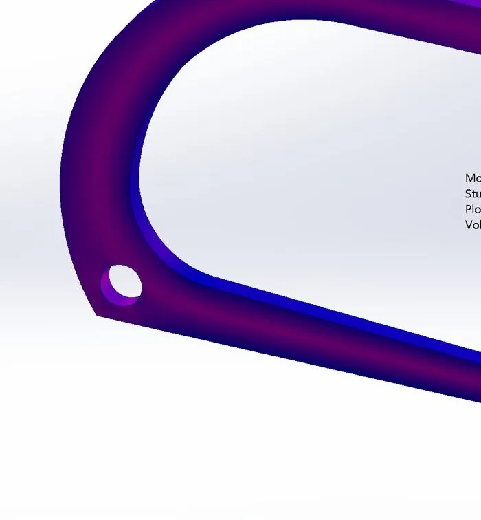
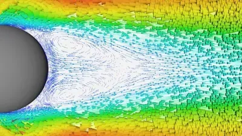
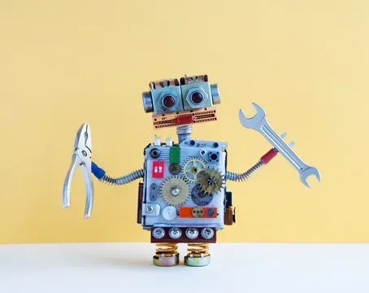
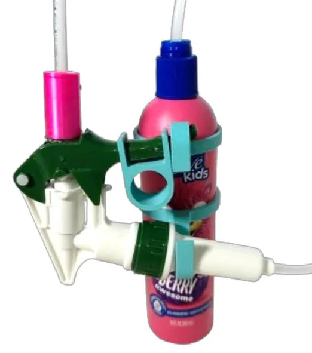
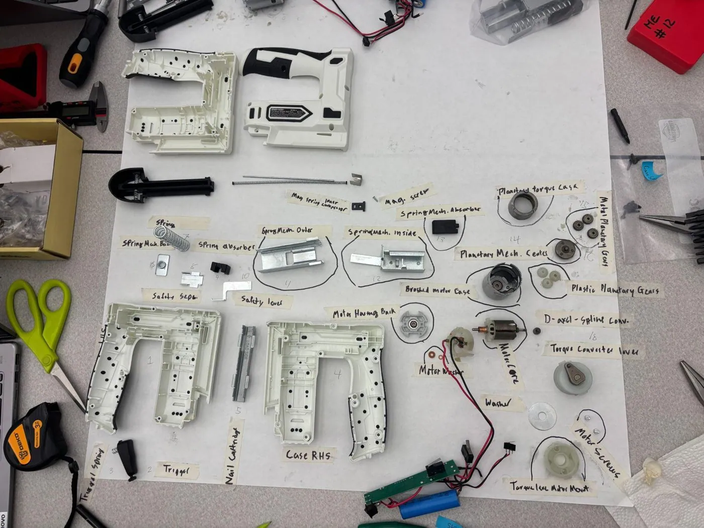
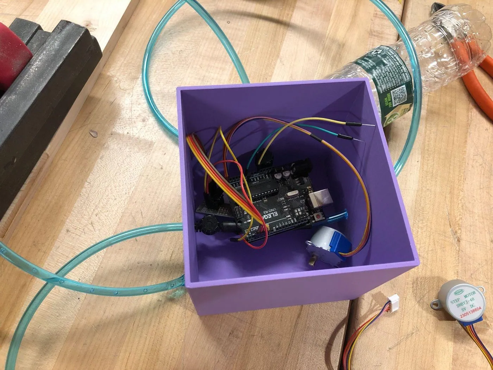

Thomas Giglia
🎓 School
Tufts University
⚙️ Major
Mechanical Engineering
🛠️ Tools
SolidWorksOnshapeCOMSOLMATLABPythonMicroPythonC++Arduino
🔗 Links
I’m a mechanical engineering student at Tufts. This is a collection of what I’ve designed, built, simulated and tested, from water systems for a community in the Ecuadorian Amazon to parts on an electric race car.








More Projects
Smaller projects and class work that don’t have their own page yet.
| Project | Course / context | Tools |
|---|---|---|
| Engineers Without Borders | ||
| Borehole & tap stands | Solomoni, Malawi | EWB Malawi program |
| Rainwater catchment for the greenhouse | EWB Greenhouse | |
| Gutter guards ↗ | EWB Ecuador | Onshape |
| CAD design ↗ | EWB Ecuador | Onshape |
| Engineering coursework | ||
| Senior capstone: user-tracking motorized TV mount | Capstone | In progress |
| osu! rhythm game | EN 1 | MATLAB |
| Ski simulator | EN 1 final project | MATLAB |
| Foosball table ↗ | ME 10 | Onshape |
| Motor ↗ | ME 40 | Onshape |
| Assorted CAD projects | ME 40 | Onshape |
| Simon Says | ME 30 | MicroPython |
| PopTheLock | ME 30 | MicroPython |
| Elphaba the Robot | ME 30 | MicroPython, JavaScript, HTML |
| Light-distance sensor | ||
| Stop-sign manufacturing cell | Robotics | ABB RobotStudio |
| Jeep Commander model ↗ | CAD | Onshape |
| Computer science | ||
| SushiGo | CS | C++ |
| MetroSim | CS | C++ |
| Zap | CS | C++ |
| RPN calculator | CS | C++ |
| Gerp | CS | C++ |
| Side projects | ||
| MWRTA route planner | Personal | JavaScript, HTML, Python |
| NYT Letter Boxed solver | Personal | Python |
| NYT Wordle solver | Personal | Python, C++ |